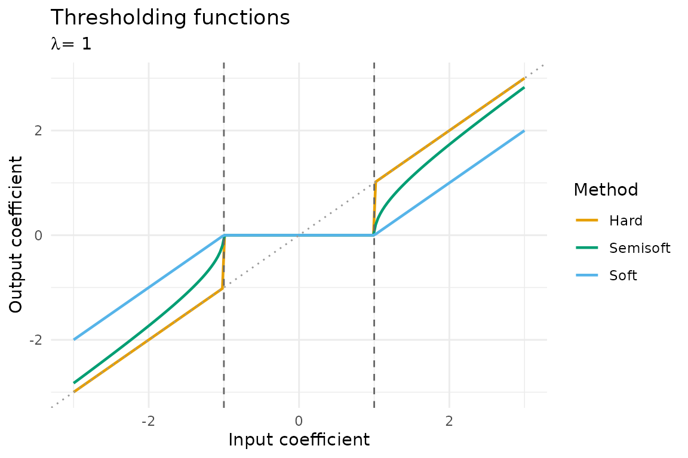
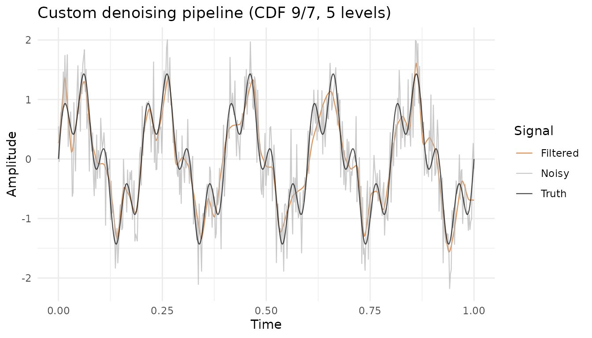
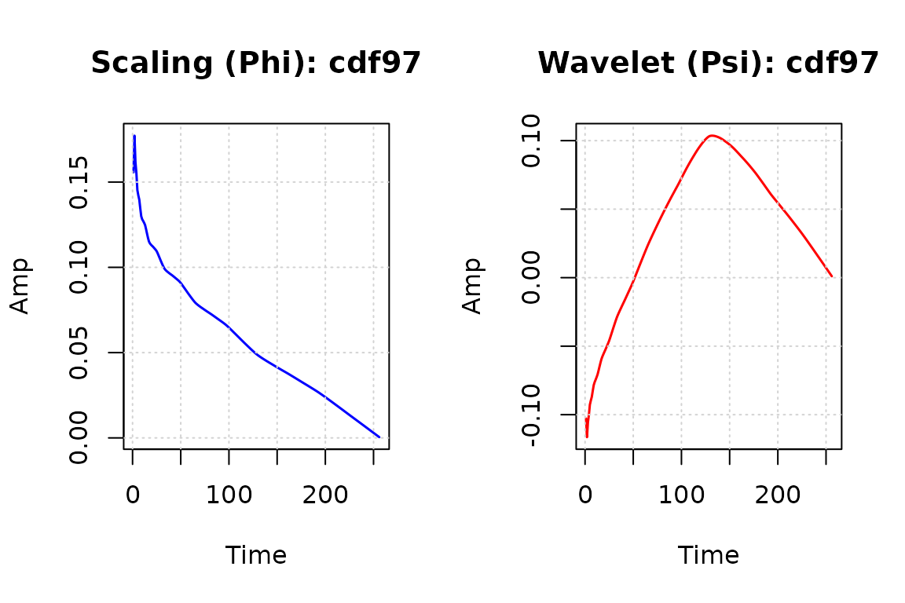

This vignette explores the extensibility of rLifting
beyond the built-in wavelets and standard denoising pipelines. The
package is designed around the Lifting Scheme framework (Sweldens,
1996), which represents wavelet transforms as compositions of simple
predict (P) and update (U) steps. This modularity makes it
straightforward to define custom wavelets, tune thresholding parameters,
and build low-level processing pipelines.
1. Built-in wavelet families
rLifting ships with six built-in lifting schemes:
| Name | Alias | Steps | Support | Properties |
|---|---|---|---|---|
haar |
2 | 2 | Orthogonal, 1 vanishing moment | |
db2 |
3 | 4 | Orthogonal, 2 vanishing moments | |
cdf53 |
bior2.2 |
2 | 6 | Biorthogonal, linear prediction |
cdf97 |
bior4.4 |
4 | 10 | Biorthogonal, used in JPEG 2000 |
dd4 |
interp4 |
2 | 8 | Interpolating, 4th-order |
lazy |
0 | 1 | Identity (polyphase split only) |
Each is constructed via lifting_scheme():
library(rLifting)
if (!requireNamespace("ggplot2", quietly = TRUE)) {
knitr::opts_chunk$set(eval = FALSE)
message("Required package 'ggplot2' is missing. Vignette code will not run.")
} else {
library(ggplot2)
}
haar = lifting_scheme("haar")
cdf97 = lifting_scheme("cdf97")
print(haar)
#> Lifting Scheme: haar
#> Steps: 2
#> Norm: Approx=1.4142, Detail=0.7071
print(cdf97)
#> Lifting Scheme: cdf97
#> Steps: 4
#> Norm: Approx=1.1496, Detail=0.8699The CDF 9/7 wavelet has four lifting steps (two predict, two update), making it significantly smoother than Haar but with wider support. This trade-off between smoothness and locality is fundamental in wavelet analysis.
2. Defining custom wavelets
One of the strengths of the Lifting Scheme is its modularity. Unlike convolution-based wavelet implementations, lifting allows you to construct wavelets by composing simple predict (P) and update (U) steps. Each step is a local operation defined by:
-
type:
"predict"or"update" - coeffs: a numeric vector of filter coefficients
-
position:
"center"(symmetric),"left"(causal), or"right"(anti-causal); or an explicitstart_idx
Example: recreating CDF 5/3 manually
The CDF 5/3 (linear) wavelet uses linear interpolation for prediction and averaging for update:
The coefficients and index offsets must match the package’s internal convention (Matlab-style factorization from Daubechies and Sweldens, 1998):
# Step 1: Predict (P) — coeffs = c(0.5, 0.5), starting at index 0
p_step = lift_step(
type = "predict",
coeffs = c(0.5, 0.5),
start_idx = 0
)
# Step 2: Update (U) — coeffs = c(0.25, 0.25), starting at index -1
u_step = lift_step(
type = "update",
coeffs = c(0.25, 0.25),
start_idx = -1
)
# Combine into a scheme
my_linear = custom_wavelet(
name = "LinearManual",
steps = list(p_step, u_step),
norm = c(sqrt(2), 1/sqrt(2)) # biorthogonal normalization
)
print(my_linear)
#> Lifting Scheme: LinearManual
#> Steps: 2
#> Norm: Approx=1.4142, Detail=0.7071Using the custom wavelet
Once defined, a custom wavelet works seamlessly with every function
in the package — lwt, ilwt,
denoise_signal_offline, denoise_signal_causal,
and new_wavelet_stream:
# A linear ramp: detail coefficients should be zero
x = 1:16
fwd = lwt(x, my_linear, levels = floor(log2(length(x))))
#> Warning in lwt(x, my_linear, levels = floor(log2(length(x)))): Residual signal
#> at level 4 has only 1.0 samples.
# Detail at level 1: all zeros for a linear signal
print(round(fwd$coeffs$d1, 10))
#> [1] 0.0000000 0.0000000 0.0000000 0.0000000 0.0000000 0.0000000 0.0000000
#> [8] 0.7071068
# Perfect reconstruction
rec = ilwt(fwd)
all.equal(x, rec)
#> [1] TRUEThe detail coefficients at level 1 are exactly zero because the CDF 5/3 wavelet has two vanishing moments — it annihilates polynomials up to degree 1 (i.e., ramps). This property is directly related to the predict step using linear interpolation.
3. Diagnosing a wavelet
rLifting includes a full diagnostic suite that verifies
the mathematical properties of any lifting scheme. This is particularly
useful when defining custom wavelets, to catch errors in the coefficient
specification.
diag = diagnose_wavelet(
my_linear,
config = list(
is_ortho = FALSE, # CDF 5/3 is biorthogonal, not orthogonal
vm_degrees = c(0, 1), # test vanishing moments for degree 0 and 1
max_taps = 5 # expected filter support width
),
plot = FALSE # suppress basis plot in vignette
)
#>
#> === DIAGNOSIS: LINEARMANUAL ===
#> [PASS] Perfect Reconstruction (Stress Test) | Max Error (Global): 1.42e-14
#> [PASS] Orthogonality (Energy Conservation) | Ratio: 1.125305 (Non-Orthogonal) [Exp: FALSE]
#> [PASS] Vanishing Moments (Degree 0) | Residual Energy: 0.00e+00 (Tol: 1.00e-09)
#> [PASS] Vanishing Moments (Degree 1) | Residual Energy: 2.08e-28 (Tol: 1.00e-09)
#> [PASS] Compact Support (FIR) | Active Taps: 5 (Max Expected: 5)
#> [INFO] Shift Sensitivity | Energy Variation (Shift 1): 50.00%The individual diagnostic tests can also be called directly:
| Function | What it tests |
|---|---|
validate_perfect_reconstruction |
|
validate_vanishing_moments |
Detail coefficients vanish for polynomials |
validate_orthogonality |
Energy preservation (Parseval’s theorem) |
validate_compact_support |
Impulse response has finite support |
validate_shift_sensitivity |
Quantifies shift-variance |
# Test perfect reconstruction separately
pr = validate_perfect_reconstruction(my_linear)
cat("Perfect reconstruction:", pr$passed, "\n")
#> Perfect reconstruction: TRUE
cat("Max error:", format(pr$max_error, scientific = TRUE), "\n")
#> Max error: NULL4. Thresholding methods
The package provides three thresholding operators, all accelerated in C++:
-
threshold_hard(x, lambda): keeps coefficients above , zeroes the rest (“keep or kill”). Best for preserving peak amplitudes, but can leave noise artifacts near the threshold. -
threshold_soft(x, lambda): shrinks all coefficients towards zero by . Smoother output, but introduces systematic amplitude bias. -
threshold_semisoft(x, lambda): hyperbolic shrinkage, a compromise. For : .
A unified wrapper threshold(x, lambda, method)
dispatches to the appropriate function.
x = seq(-3, 3, length.out = 201)
lambda = 1.0
df_th = data.frame(
x = rep(x, 3),
y = c(threshold(x, lambda, "hard"),
threshold(x, lambda, "soft"),
threshold(x, lambda, "semisoft")),
Method = rep(c("Hard", "Soft", "Semisoft"), each = length(x))
)
library(ggplot2)
ggplot(df_th, aes(x = x, y = y, colour = Method)) +
geom_line(linewidth = 0.8) +
geom_abline(slope = 1, intercept = 0, linetype = "dotted", colour = "grey60") +
geom_vline(xintercept = c(-lambda, lambda), linetype = "dashed", colour = "grey40") +
labs(title = "Thresholding functions",
subtitle = expression(paste(lambda, " = 1")),
x = "Input coefficient", y = "Output coefficient") +
theme_minimal() +
scale_colour_manual(values = c("Hard" = "#E69F00", "Soft" = "#56B4E9",
"Semisoft" = "#009E73"))
5. Adaptive threshold estimation
Instead of requiring the user to specify a threshold manually,
rLifting can estimate it adaptively from the wavelet
coefficients. The compute_adaptive_threshold function
implements the recursive formula from Liu et al. (2014), where the
threshold at each decomposition level is derived from the noise variance
estimated via the median absolute deviation (MAD) of the finest-level
detail coefficients.
set.seed(42)
n = 256
signal = sin(seq(0, 4*pi, length.out = n)) + rnorm(n, sd = 0.3)
sch = lifting_scheme("cdf97")
decomp = lwt(signal, sch, levels = 4)
# Compute adaptive thresholds
lambdas = compute_adaptive_threshold(decomp, alpha = 0.3, beta = 1.2)
print(lambdas)
#> --- Adaptive Thresholds (Recursive) ---
#> d1: 1.153069
#> d2: 0.886976
#> d3: 0.771284
#> d4: 0.701167These thresholds are used internally by
denoise_signal_offline, denoise_signal_causal,
and new_wavelet_stream, controlled by the
alpha and beta parameters.
6. Low-level transform pipeline
For users who need fine-grained control, the forward and inverse transforms can be called directly, enabling custom processing between decomposition and reconstruction:
set.seed(42)
n = 512
t_vec = seq(0, 1, length.out = n)
pure = sin(2 * pi * 5 * t_vec) + 0.5 * sin(2 * pi * 20 * t_vec)
noisy = pure + rnorm(n, sd = 0.4)
sch = lifting_scheme("cdf97")
# 1. Forward transform
decomp = lwt(noisy, sch, levels = 5)
# 2. Compute adaptive thresholds
lambdas = compute_adaptive_threshold(decomp, alpha = 0.3, beta = 1.2)
# 3. Custom thresholding: apply semisoft to detail levels,
# but leave the coarsest level (d5) untouched
for (lev in 1:4) {
dname = paste0("d", lev)
decomp$coeffs[[dname]] = threshold(
decomp$coeffs[[dname]], lambdas[[dname]], method = "semisoft"
)
}
# d5 is not thresholded — preserving low-frequency structure
# 4. Inverse transform
reconstructed = ilwt(decomp)
# 5. Compare
df_pipe = data.frame(
t = rep(t_vec, 3),
value = c(noisy, pure, reconstructed),
Signal = rep(c("Noisy", "Truth", "Filtered"), each = n)
)
ggplot(df_pipe, aes(x = t, y = value, colour = Signal)) +
geom_line(alpha = 0.7, linewidth = 0.4) +
labs(title = "Custom denoising pipeline (CDF 9/7, 5 levels)",
x = "Time", y = "Amplitude") +
scale_colour_manual(values = c("Noisy" = "grey70", "Truth" = "black",
"Filtered" = "#D55E00")) +
theme_minimal()
This level of control is useful when the standard denoising functions are not flexible enough — for example, when different decomposition levels require different thresholding strategies, or when certain frequency bands should be preserved entirely.
7. Visualizing wavelet basis functions
The visualize_wavelet_basis function (or
plot(scheme)) generates the scaling function
()
and wavelet function
()
by cascade iteration of the lifting steps:
plot(lifting_scheme("cdf97"))
This is helpful for understanding the shape and support of a wavelet, and for verifying that custom wavelets produce reasonable basis functions.
Summary
rLifting is designed to be both high-performance and
extensible:
- Built-in wavelets cover the most common use cases (Haar through CDF 9/7).
-
Custom wavelets can be defined via
lift_step+custom_waveletand used in every function. - Diagnostic tools verify mathematical properties automatically.
- Three thresholding methods and adaptive threshold estimation provide flexible noise removal.
-
Low-level API (
lwt/ilwt+compute_adaptive_threshold+threshold) allows fully custom pipelines. - The C++ backend ensures that all operations run at native speed.